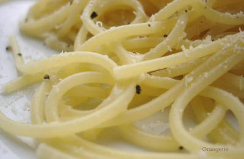

A state of melt
The last time I was this sick was 12 years ago, during the Christmas holidays of my freshman year of high school. Though my memories of the time are understandably—and blessedly—hazy, I do remember the key points: I spent a week lying on the couch in my family’s den; I sucked down a box or two of Comtrex; I lost eight pounds; and I got to wear my favorite green pseudo-punk bomber-jacket-inspired parka indoors. Those were the days, as they say.
There’s nothing like the first real flu of adulthood to make me look fondly upon the illnesses of my adolescence. Today, dear reader, I have two words for you: night sweats. And I’m not referring to the kind that can result in babies. I’ve been barricaded in my apartment since Thursday afternoon, with nothing to distract me but nausea, a sore throat, headaches, body aches, hot flashes, and the entire first season of America’s Next Top Model on DVD. It should be amply clear that I am not well.
But as with most things, sickness has its upsides. If nothing else, lying supine for the better part of three days does give a girl new perspective, literally and figuratively. And ever the optimist, I’ve chiseled a few gems of wisdom from the dark mineshaft of my disease.
#1: If you are sick and live alone in a city thousands of miles from both your mother and your boyfriend, crying about that fact makes things a lot better, or, at least, it frightens your mother and your boyfriend enough to make them call every two hours, which makes things a lot better.
#2: An ice-cold glass of tangerine-flavored Emer’gen-C is unspeakably delicious, especially when you have no clothes left to remove but are still sweating.
#3: A slice of buttered toast with honey is unspeakably delicious, period.
And #4: If you’re looking to expand your flu-vexed vocabulary beyond “night” and “sweat,” try cacio and pepe.

Cacio e pepe is shorthand for hot, wet spaghetti slicked with finely grated Pecorino Romano (cacio) and dusted heartily with freshly ground black pepper (pepe). Whether I am fit or frail, healthy or feeling like hell, a day that includes this elemental Roman peasant dish cannot be deemed bad. Even at my worst, salt, starch, and the dairy tang of sheep’s milk cheese never fail to arouse a lusty jab from my fork.

In fact, though not normally one for exaggeration, I’d dare argue that this may be a perfect dish: round but not rich, lightly creamy but clean, laced with peppery heat, and fantastically easy to both prepare and consume with heavy eyelids and a hoarse throat. If cacio e pepe is properly made and promptly eaten, the cheese should be in a “state of melt,” according to Lynne Rossetto Kasper, as should the person eating it. It’s more satisfying than hot flashes and night sweats combined, and short of a state of wellness, I can’t think of anything more delicious.
{kind=link}
Cacio e Pepe
Adapted from Gourmet, March 2003
I first wrote about cacio e pepe here about a year ago, but because I didn’t do it justice then—and because I’ve eaten it three times in the past three days—I feel it deserves to be revisited. And anyway, you know how I feel about anything involving cheese. This recipe serves four as a first course, although you can easily scale it down to feed one or two. It’s more about method than measurement.
½ lb good-quality dried spaghetti*
2 ½ oz (¾ cup plus 2 Tbs) very finely grated good-quality Pecorino Romano, such as Sini Fulvi**
Freshly ground black pepper
Cook the spaghetti in a large pot of boiling salted water until al dente.
While the spaghetti is cooking, fill a large glass or ceramic bowl with hot water to warm it. Just before the pasta is ready, drain the bowl but do not dry it.
Reserve ½ cup of the pasta cooking water, and then drain the pasta quickly in a colander. Do not shake off the excess water. Dump the pasta into warm, barely wet bowl. Sprinkle ¾ cup cheese and about 3 Tbs cooking water evenly over the spaghetti, and toss it quickly but gently. If the pasta seems dry, add more cooking water. Divide the pasta among four plates, and finish it a few grinds of black pepper and a sprinkling of the remaining cheese. Serve immediately.
*Always buy pasta that has been extruded through old-fashioned bronze dies rather than Teflon ones. The slightly rough surface of the pasta will hold sauces better.
**Grate the cheese on the ragged-edged holes of a box grater; do not use the small teardrop-shaped holes you’re probably accustomed to using for a fine grate. You want to wind up with a sort of cheese powder, which makes for almost instant melting.